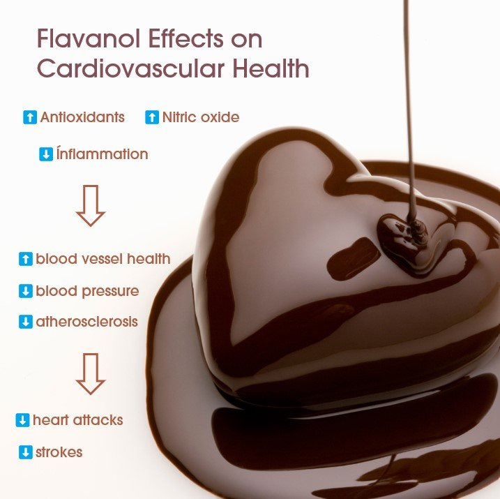
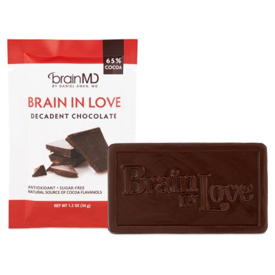

1. Rich in Antioxidants
Cocoa powder is rich in antioxidants, particularly flavonoids, which offer numerous health benefits. Flavonoids belong to a group of phenolic compounds and possess powerful antioxidant properties. Some examples of these compounds include catechins, procyanidins, and epicatechins. Their primary function is to combat free radicals, which are unstable molecules that can cause oxidative stress within the body. By scavenging and neutralizing free radicals, these antioxidants protect cells from damage and minimize inflammation. Additionally, consuming these antioxidants can help lower the risk of various health issues, including cardiovascular diseases, kidney disease, cancer, arthritis, neurological diseases, and respiratory diseases.
2. Cardiovascular Health
Studies indicate that cocoa powder has been proven to have significant advantages in enhancing cardiovascular health. The presence of flavonoids, such as epicatechins, in cocoa powder, have been found to yield a multitude of positive effects on the heart and blood vessels. These compounds effectively enhance endothelial function, which pertains to the blood vessels' ability to expand and contract. By promoting healthy blood vessel function, cocoa powder can improve blood flow, lower blood pressure, and contribute to overall cardiovascular well-being.

Furthermore, consistent consumption of cocoa powder has demonstrated notable enhancements in different indicators of cardiovascular health. It has the ability to decrease LDL cholesterol levels, increase HDL cholesterol levels, and lower the likelihood of blood clot formation. A comprehensive analysis of various randomized control trials additionally revealed that cocoa consumption was linked to a reduction in both systolic and diastolic blood pressure. As a result, integrating cocoa powder into your diet can play a role in promoting a healthier heart and reducing the risk of heart disease.
3. Mood enhancement
Cocoa powder has been discovered to possess potential mood-enhancing effects and the ability to promote a sense of well-being. This can be attributed to the presence of various compounds, including phenethylamine, serotonin, and anandamide, which can positively impact mood. Phenethylamine acts as a natural antidepressant and stimulant by stimulating the release of hormones like dopamine, known as the "happy hormone," resulting in a temporary mood elevation.
Serotonin, another compound found in cocoa powder, is a neurotransmitter involved in regulating mood. It aids in stabilizing emotions and promoting feelings of happiness and relaxation. Anandamide, often referred to as the "bliss molecule," is a natural cannabinoid that binds to receptors in the brain, creating a sense of joy and well-being.
Research conducted on individuals has demonstrated that consuming cocoa can have a positive influence on mood. For instance, one study revealed that participants who consumed cocoa rich in flavonoids reported feeling calmer and more content compared to those who consumed a placebo. Another study found that cocoa consumption resulted in improvements in mood, cognitive performance, and fatigue levels after just four weeks.
4. Brain Function
Cocoa powder has demonstrated promising effects on brain health and cognitive function. The bioactive compounds found in cocoa, such as flavonols, caffeine, and theobromine, offer beneficial impacts on the brain.  Flavonols, specifically, have been observed to enhance blood flow to the brain, improve neuronal function, and stimulate the growth of blood vessels and neurons in the hippocampus, a critical region for memory and learning.
There is compelling research indicating that regular consumption of cocoa powder can result in cognitive performance improvements. It can enhance memory, attention, and focus, which is advantageous for maintaining brain health as we age. Additionally, the stimulating compounds in cocoa powder, like caffeine and theobromine, can provide a temporary increase in alertness and mental energy.
Furthermore, cocoa powder shows promising long-term benefits for brain health. The consumption of cocoa flavonols has been associated with a reduced risk of neurodegenerative diseases, such as Alzheimer's disease and Parkinson's disease, due to their antioxidant and anti-inflammatory effects.
5. Anti-Inflammatory Properties
Cocoa powder possesses potent anti-inflammatory properties that can effectively counteract inflammation and mitigate its adverse effects on the body. Inflammation is the immune system's response to foreign agents like viruses, bacteria, and other substances. It can be triggered by various factors, including illness or lifestyle choices such as stress, alcohol consumption, smoking, or intense exercise. Chronic inflammation is a common underlying factor in numerous diseases, including cardiovascular disease, diabetes, and certain types of cancer.
The flavonoids and other bioactive compounds present in cocoa powder have been demonstrated to impede the production of pro-inflammatory molecules and regulate immune responses. Cocoa flavonoids have been found to reduce the levels of inflammatory markers, such as C-reactive protein (CRP) and interleukin-6 (IL-6), which are associated with chronic inflammation.
6. Weight loss
Cocoa powder can aid in weight loss and management. Despite its indulgent taste, cocoa powder has lower calorie and fat content compared to other chocolate products. It can serve as a satisfying alternative that allows you to enjoy the flavor of chocolate while maintaining control over your calorie intake.
Furthermore, cocoa powder contains compounds that may support metabolism and the oxidation of fats. The presence of caffeine and theobromine in cocoa powder can stimulate the central nervous system, increase thermogenesis (the body's calorie-burning process), and enhance the breakdown of fats for energy.
Numerous studies have examined the effects of cocoa consumption on weight-related factors. For instance, a study conducted on overweight individuals discovered that cocoa supplementation led to reductions in body weight and waist circumference when compared to a placebo group.
It's important to keep in mind that cocoa can only contribute to your weight loss efforts if you follow a healthy diet and engage in at least moderate physical activity. Additionally, consuming excessive amounts of high-calorie cocoa products like candy and cake will not only hinder your weight loss progress but may also lead to weight gain. Opting for unsweetened cocoa powder without added sugars is the best choice to avoid unnecessary calorie intake.
7. Skin Health
Cocoa powder offers benefits that go beyond internal health and can work wonders for the skin as well. The high antioxidant content in cocoa powder helps combat oxidative stress and damage caused by environmental factors like UV radiation and pollution. By neutralizing free radicals, cocoa powder contributes to maintaining healthy and radiant skin.
Cocoa powder contains flavonoids that can enhance blood flow to the skin, improve skin elasticity, and increase hydration. These compounds also aid in protecting against UV-induced damage, reducing inflammation, and promoting the production of collagen and elastin, proteins that are crucial for maintaining the skin's structure and elasticity.
Research has shown the potential of cocoa flavonoids in improving various skin conditions. Studies on women with photodamaged skin who were given cocoa flavanol supplementation demonstrated improvements in skin elasticity and facial wrinkles. Additionally, applying cocoa extract topically was found to reduce the appearance of wrinkles and enhance skin hydration.
To enjoy the skin benefits of cocoa powder, you can incorporate it into your skincare routine by using natural cocoa-based products or creating homemade masks and scrubs.